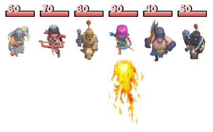
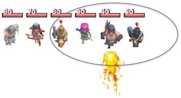

En un videojoc els enemics es disposen en una fila. El jugador els hi pot llançar boles de foc i provocar un dany a l'enemic en el qual impacta i també als que estiguin a l'abast de la bola de foc.
Cada enemic té un nivell de vida, i quan els alcança la bola de foc els hi resta una quantitat determinada de vida. Quan un enemic té nivell zero, ja no se li pot restar més vida.
Input Format
0) de l'enemic al qual impacta la bola de foc-1Per exemple, la següent bola de foc impacta a l'enemic en la posició 4 i té un abast 2:

Constraints
-
Output Format
Per cada bola llançada, s'imprimirà en una nova línia el nivell de vida resultant dels enemics, separats per espais.
Sample Input 0
5
100 50 30 20 10
1 1 10
2 2 5
-1 -1 -1
Sample Output 0
90 40 20 20 10
85 35 15 15 5
Sample Input 1
3
50 50 50
1 0 25
-1 -1 -1
Sample Output 1
50 25 50
Sample Input 2
3
30 10 30
1 1 10
1 1 10
1 1 10
-1 -1 -1
Sample Output 2
20 0 20
10 0 10
0 0 0
Sample Input 3
5
100 100 100 100 100
2 0 10
2 1 10
2 2 10
2 3 10
-1 -1 -1
Sample Output 3
100 100 90 100 100
100 90 80 90 100
90 80 70 80 90
80 70 60 70 80